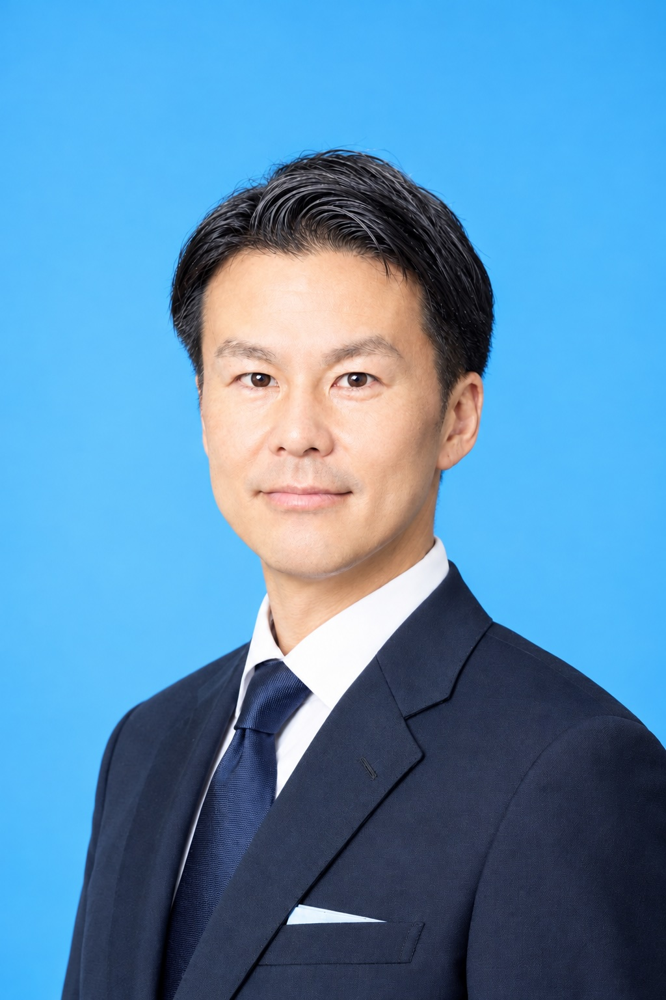

01 納得できる行政運営
データと費用対効果を踏まえ、政策を検証する行政運営を考えます。

PROFILE
習志野市立藤崎小学校 出身
習志野市立第五中学校 出身
産業能率大学 卒業（学士〈マネジメント〉）
衆議院議員 小林鷹之 元公設秘書
国会議員政策担当秘書任用資格保有
これまでの経験を生かし、習志野のまちづくりや行政のあり方について考え、発信していきます。
VISION
大きな言葉だけではなく、日々の暮らしに根ざした課題から、習志野の未来を考える。
地域の声とデータの両方を大切にし、具体的な提案につなげていきます。
POLICY
データと費用対効果を踏まえ、政策を検証する行政運営を考えます。
将来の人口や財政を見据え、公共施設の維持管理と再編を考えます。
地域の防災力と、災害に備えるまちづくりについて考えます。
緑陰や都市機能の充実を通じ、日々の暮らしやすさを考えます。
デジタル技術を活用し、利便性と行政サービスの向上を目指します。
人口や地域の特性を踏まえ、持続可能な都市のあり方を考えます。
NEWS & ACTIVITIES
最新記事を読み込み中です。
CONTACT
ご意見・ご質問などは、下記の連絡先からお寄せください。
お問い合わせ先は公開前に設定してください。